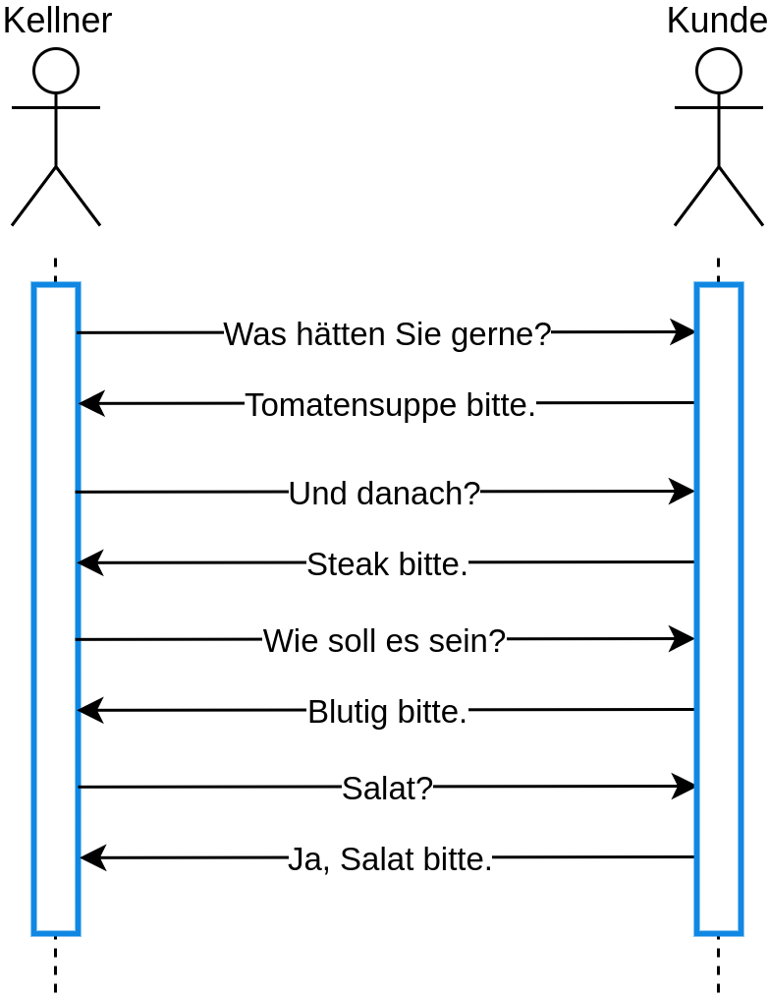
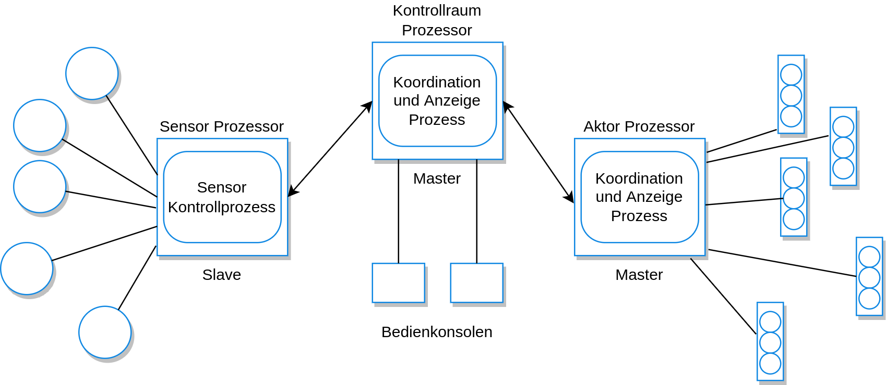
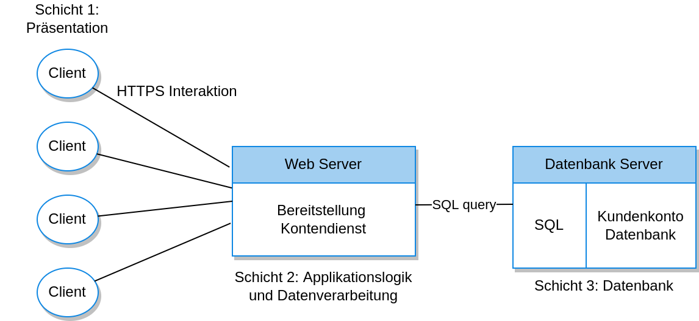

class: center, middle # Distributed Software Engineering # **Autor:** Malte Reinsch --- ### Inhalte - Einleitung - Verteilte Systeme - Client-Server Computing - Architekturmuster für verteilte Systeme - Software as a Service --- ### Einleitung - die meisten modernen Systeme sind verteilt - d.h.: mehr als ein Rechner beteiligt - Tannenbaum & Van Steen: "Eine Sammlung aus unabhängigen Rechnern, die aus Sicht des Nutzers als einzelnes zusammenhängendes System wahrgenommen wird" --- ### Vorteile Verteilte Systeme haben einige Vorteile: 1. Geteilte Ressourcen 2. Offenheit 3. Nebenläufigkeit 4. Skalierbarkeit 5. Fehlertoleranz ### Wo Licht, da auch Schatten... - deutlich (!) komplexer - Antwortzeit hängt von Gesamtbelastung ab --- ### Verteilte Systeme Komplexität: - keine Komponente hat die komplette Kontrolle über das System (Unberechenbarkeit) - das Netzwerk ist ein eigenes System - Interaktion von Komponenten unterschiedlicher Hersteller Wichtige Entwicklungsaspekte: - Transparenz - Offenheit - Skalierbarkeit - Sicherheit - Dienstqualität (QoS) - Fehlermanagement --- ### Interaktionsmodelle Zwei Interaktionsarten der System-Rechner: - prozedurale Interaktion - Nachrichtenbasierte Interaktion --- ### Interaktionsmodelle <div style="margin-top:20px;">  </div> --- ### Interaktionsmodelle Nachricht an die Küche: ``` <starter> <dish name = “soup” type = “tomato” /> <dish name = “soup” type = “fish” /> <dish name = “pigeon salad” /> </starter> <main course> <dish name = “steak” type = “sirloin” cooking = “medium” /> <dish name = “steak” type = “fillet” cooking = “rare” /> <dish name = “sea bass”> </main> <accompaniment> <dish name = “french fries” portions = “2” /> <dish name = “salad” portions = “1” /> </accompaniment> ``` --- ### Middleware Komponenten verwenden verschiedene - Programmiersprachen - Rechnerarchitekturen - Protokolle - ... Mit Middleware wird das Zusammenspiel der Komponenten gewährleistet. Zwei Arten der Unterstützung: - Interaktionshilfe - Bereitstellung gemeinsamer Dienste --- ### Middleware <div style="margin-top:20px;"> <img style="width:90%;" src="media/middleware.drawio.PNG" /> </div> --- ### Client-Server Computing - Modellierung der Software als Sammlung von Diensten - Client-Programm (lokaler Rechner) interagiert mit Server-Programm (idr. kein lokaler Rechner) - Server bieten Dienste an - Clients nutzen Dienste --- ### Client-Server Computing <div style="margin-top:20px;"> <img style="width:90%;" src="media/client_server.drawio.PNG" /> </div> --- ### Schichtenmodell Das Client-Server Modell ist von der klaren Trennung zwischen Berechnungen von Informationen und deren Darstellung abhängig. Daher hat sich das Schichtenmodell etablier: <div style="margin-top:20px;"> <img style="width:30%;" src="media/layers.drawio.PNG" /> </div> --- ### Architekturmuster für verteilte Systeme **Design von verteilten Systemen ist ein Balanceakt zwischen** - Performance - Verlässlichkeit - Sicherheit - Verwaltbarkeit Um diesen Balanceakt zu bestehen, haben sich im Laufe der Zeit Architekturmuster entwickelt, die in bestimmten Szenarien eine gute Lösung präsentieren. **Im Folgenden** - Master-Slave Architektur - Zweistufige Client-Server Architektur - Mehrstufige Client-Server Architektur - Verteilte Komponentenarchitektur - Peer-to-peer Architektur --- ### Master-Slave Architektur **Anwendung** - häufig in zeitkritischen Anwendungen eingesetzt - Bspw. Echtzeitsysteme - arbeitet oft mit fester Zykluszeit **"Master"-Prozess** - Berechnungen - Datenverarbeitung - Kommunikation - Steuerung der "Slave"-Prozesse **"Slave"-Prozesse** - einer bestimmten Aktion zugeordnet - Datenakquise und -aufbereitung (Sensoren) - Aktorsteuerung --- ### Master-Slave Architektur Beispiel einer Ampelsteuerung: <div style="margin-top:20px;">  </div> --- ### Zweistufige Client-Server Architektur Die einfachste Form der klassischen Client-Server Architektur. Die Architektur ist hilfreich zur Orientierung während des Systementwurfs, wird sonst aber praktisch fast nicht mehr eingesetzt. **Unterscheidung nach** - Thin-Client: Der Client implementiert nur die Präsentationsschicht - Fat-Client: Ein Teil oder die gesamte Applikationslogik ist auf dem Client implementiert --- #### Thin-Client **Vorteile** - einfach zu verwalten - insbesondere dann relevant, wenn viele Clients mit spezifischer Software eingesetzt werden **Nachteile** - hohe Rechenbelastung der Server - Netzwerkbelastung #### Fat-Client **Vorteile:** - Bessere Ausnutzung der Rechenleistung des Client-Rechners - Reduzierung der Netzwerkbelastung **Nachteile:** - Erfordert Installation und Wartung komplexer Client-Software - Verwaltbarkeit leidet durch Verteilung des Applikationslogik --- ### Beispiel Fat-Client (Bankautomaten) <div style="margin-top:20px;"> </div> --- ### Mehrstufige Client-Server Architektur **Limitierungen zweistufige Client-Server Architektur**: - Thin-Clients: Skalierbarkeit, Performance - Fat-Clients: Systemverwaltung Idee: jede logische Schicht kann theoretisch auf einem eigenen Prozessor ausgeführt werden. **Vorteile**: - Mehr Webserver hinzufügen -> Skalierbarkeit - Aufspaltung monolithischer Strukturen -> Verwaltbarkeit - Applikationslogik verwendet anderen Rechner als Datenbereitstellung -> Performance <div style="margin-top:20px;">  </div>